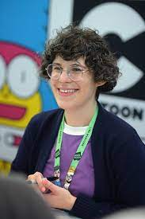
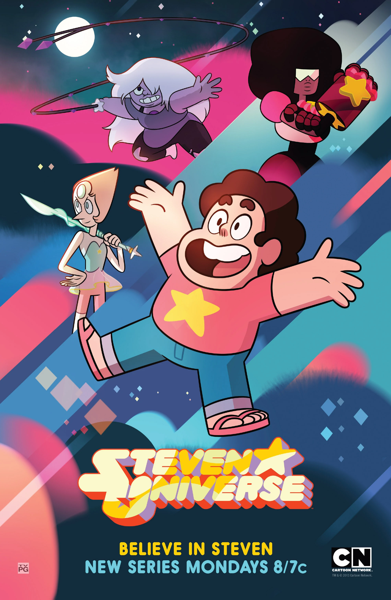

Em Steven Universo, o mundo é protegido de ameaças malignas pelas Crystal Gems, um movimento de Gems que jurou proteger a Terra das Homeworld Gems. Seus poderes fluem de suas pedras preciosas; gemas mágicas incrustadas em algum lugar do corpo da espécie. As quatro Crystal Gems são Garnet, Ametista , Pérola e Steven. Várias joias, como Peridot, Lapis Lazuli, Bismuto e uma humana, Connie Maheswaran, também se juntaram à equipe. Steven é um jovem meio-humano e meio-gem que herdou sua pedra preciosa de sua mãe, uma Crystal Gem chamada Rose Quartz, que desistiu de sua forma para criar Steven. Enquanto Steven tenta descobrir os segredos para usar sua gem, ele passa seus dias em Beach City fazendo atividades com as outras Crystal Gems, seja ajudando-as a salvar o universo ou apenas passeando.
Rebecca Rea Sugar é a criadora de Steven Universo e Steven Universo Futuro e diretora de Steven Universo: O Filme. Ela é uma artista, compositora e diretora que é mais reconhecida por seu trabalho no programa Hora de Aventura, outra série original do Cartoon Network, bem como seu premiado curta de animação Singles. Ela também criou uma graphic novel, Pug Davis, além de ajudar com personagens e planos de fundo para a websérie nockFORCE de Ian Jones-Quartey antes de sua carreira.

O episódio piloto foi lançado em 21 de maio de 2013, no canal do pai de Rebecca Sugar no YouTube (mas já foi removido). O show estreou no Cartoon Network em 4 de novembro de 2013, nos EUA, em 6 de janeiro de 2014, em algumas partes da Ásia, e 7 de abril de 2014, na América do Sul. Em 25 de julho de 2014, foi anunciado que Steven Universe foi renovado para uma segunda temporada, e em 7 de julho de 2015, foi anunciado que a série havia sido renovada para uma terceira temporada. Em 30 de março de 2016, foi declarado que essas duas temporadas seriam subdivididas para criar quatro temporadas de menor duração, dando ao show cinco temporadas no total.
O programa exibiu o final da série, "Change Your Mind", em 21 de janeiro de 2019, concluindo a série com 5 temporadas e 160 episódios. Em 2 de setembro de 2019 estreou o filme da animação chamado “Steven Universo: o filme”
Foi anunciado em 4 de outubro de 2019: Steven Universe Future. A série se passa após os eventos do filme e estreou em 7 de dezembro de 2019. Terminou em 27 de março de 2020.
